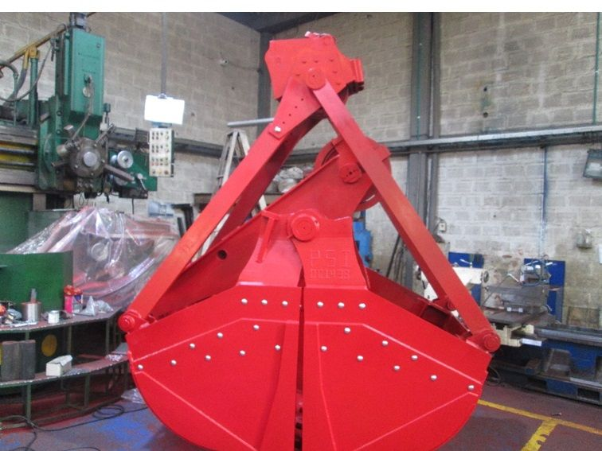
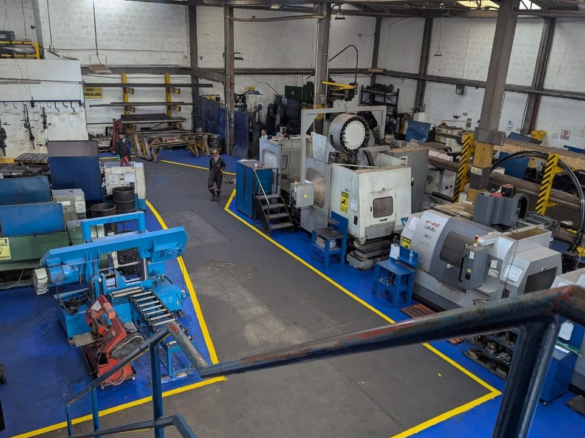
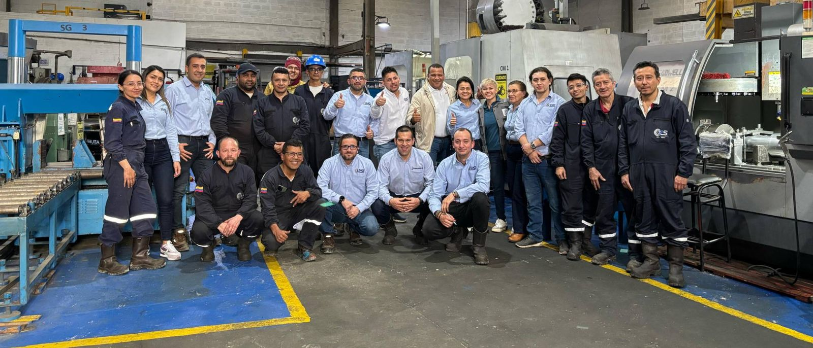

Inicio / Acerca de
Acerca de
Somos Petroservicios Industriales S.A.S. Conoce nuestra trayectoria, respaldo y la gente que hace posible cada proyecto.
Nuestra Historia

Almeja industrial fabricada por PSIPetroservicios Industriales S.A.S. presta servicios metalmecánicos e industriales para los sectores petrolero, industrial, minero y energético: fabricación, inspección, mantenimiento, reparación y remanufactura de herramientas, accesorios, partes y equipos.
Desde enero de 2007, cuando Cristo Rangel y Arlan Penagos fundaron PSI en el barrio Carvajal de Bogotá con siete colaboradores, hemos construido nuestra reputación sobre una idea simple: hacer las cosas bien y cumplirle al cliente. Hoy, con certificaciones API e ISO 9001, tecnología CNC y un equipo calificado, seguimos creciendo con la misma filosofía.
Fundada por Cristo Rangel y Arlan Penagos en el barrio Carvajal, Bogotá, con siete colaboradores. Primeros trabajos metalmecánicos para Parker, Serinco y Saxxon.
Ampliamos la planta, la maquinaria y el equipo de trabajo, hasta cerca de 17 colaboradores.
Incorporamos CMM, tornos CNC y equipos de medición para ganar precisión y reducir los tiempos de entrega.
Implementamos nuestro sistema de gestión de calidad con el acompañamiento de FMC Technologies, hoy TechnipFMC.
Durante la pandemia seguimos operando y participamos en proyectos de construcción, entre ellos Hidroituango, en Antioquia.
API Q1, 5B, 7-1, 7-2 y 6A · ISO 9001:2015 · 90 puntos en RUC.
Lo mejor aún está por construirse.
Mediante el suministro de servicios metalmecánicos e industriales, PSI busca satisfacer las necesidades del sector petrolero, industrial, minero y energético en relación con la fabricación, inspección, mantenimiento, reparación y remanufactura de herramientas, accesorios, partes o equipos, gestionando los negocios de manera que generen valor para la compañía y las partes interesadas.
En el año 2027, PSI será reconocida por sus productos y servicios de calidad, logrando así ser aliado estratégico para nuestros clientes en el sector hidrocarburo, minero, industrial y energético, mediante la aplicación de un portafolio vanguardista y nuevas tecnologías encaminadas a su desarrollo, favoreciendo un buen entorno de trabajo, la igualdad de oportunidades y un impacto positivo para empleados, clientes, proveedores, medio ambiente y todos los grupos de interés de la organización.
Certificaciones
Certificados y licencias vigentes, verificables y descargables en PDF.
Diseño, fabricación y reparación de herramientas de fondo de pozo (wireline y slickline), herramientas de completamiento y equipos de control de presión; fabricación y reparación de drill stem subs; roscado, calibración e inspección de casing, tubing, line pipe y conexiones rotary shouldered; diseño y fabricación de adapter spools, spacer spools, blind y test flanges.
Mismo alcance que ISO 9001:2015, bajo el sistema de gestión de calidad específico de la industria petrolera del API.
Blind and Test Flanges, Adapter Spools y Spacer Spools — niveles PSL 1, 2 y 3.
Nuestra Infraestructura
Planta en Bogotá con tornos y centros de mecanizado CNC, sierra de corte, CMM y equipos de medición, organizada en zonas demarcadas para un flujo de trabajo seguro y trazable.

 Mecanizado de precisiónRosca y brida terminadas en torno CNC
Mecanizado de precisiónRosca y brida terminadas en torno CNC Brida weld neckPerforación y acabado con control dimensional
Brida weld neckPerforación y acabado con control dimensional Estructuras metálicasPlataforma con escalera según planos
Estructuras metálicasPlataforma con escalera según planos Fabricación y pinturaEstructura con señalización de seguridad
Fabricación y pinturaEstructura con señalización de seguridad API 6ASpool con brida y espárragos
API 6ASpool con brida y espárragos API 6ABrida con espárragos lista para despacho
API 6ABrida con espárragos lista para despacho API 6ABrida sobre base de transporte
API 6ABrida sobre base de transporteNuestro Equipo
Detrás de cada pieza hay personas. Un equipo calificado, comprometido con hacer las cosas bien y cumplirle al cliente.

Diferenciadores
Productos y procesos bajo norma API e ISO.
Validación por software de simulación e informes técnicos.
Cobertura petrolera e industrial en un solo aliado.
A partir de tus planos, con trazabilidad completa.
“La calidad no es un acto, es un hábito.”Filosofía PSI
“Cada pieza que entregamos lleva nuestra firma de precisión.”Compromiso PSI
“Certificar es garantizar seguridad en cada operación.”Estándar PSI
“Tu proyecto, respaldado por ingeniería y experiencia.”Servicio PSI